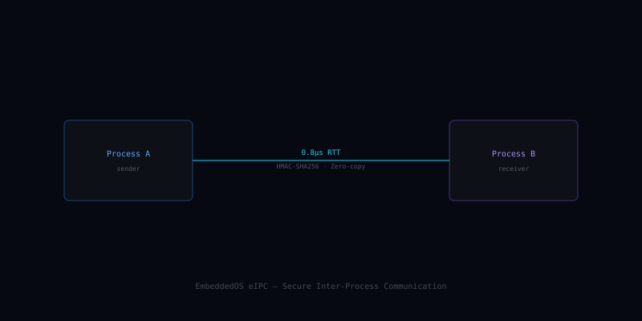

EIPC — Secure Inter-Process Communication
EIPC is the secure communication fabric that connects every EoS component — a capability-based message bus with HMAC-SHA256 authentication, predictable scheduling, and zero-copy fast paths.
What EIPC is
EIPC extends the EoS capability model out into IPC: every connection is an unforgeable capability handle, every message is HMAC-authenticated, and every queue has a guaranteed latency budget enforced by the scheduler.
It acts as the connective tissue between EoS, EAI, ENI, eApps, and external services — same wire format whether the peer is a thread, a process, a container, or a remote node.
Features
The shape of EIPC at a glance.
Capability Model
Unforgeable connection handles; no ambient authority, no global namespace.
HMAC-SHA256 Authentication
Every message signed; tampering and replay attacks rejected at the bus.
Predictable Latency
Per-channel latency budgets enforced by the EoS scheduler — no priority inversion.
Zero-Copy Fast Path
Shared-memory ring for large payloads when both peers live on the same node.
Streaming & Request/Reply
Both message-passing styles supported; back-pressure first-class.
Cross-Node Transport
Same API over loopback, UART, USB, Ethernet, Wi-Fi, or BLE.
Tracing & Replay
Per-channel structured tracing; deterministic record / replay for debugging.
Quota Enforcement
Per-process bandwidth and queue-depth quotas — no chatty app starves the bus.
Language Bindings
C, C++, Go, Rust, Python, Dart bindings ship in lock-step with the core.
Open source on GitHub
EIPC is MIT licensed and developed in the open. Issues, discussions, and pull requests welcome.
In the EoS stack
EIPC is the highlighted layer below.
Pairs well with
Sibling components that EIPC commonly works alongside.
EIPC Secure IPC Architecture
Six isolated processes communicating through the EIPC core, which provides message queues, zero-copy shared memory, synchronization primitives, capability tokens, and event channels.

EIPC at a Glance
| IPC Latency | < 500 ns for message-queue send/receive on Cortex-M4 @ 168 MHz |
|---|---|
| Zero-Copy Shared Memory | Page-mapped shared regions with capability-based access tokens |
| Synchronization Primitives | Mutex, recursive mutex, semaphore (counting + binary), condition variable, event flags, barrier |
| Message Types | Typed messages with compile-time schema validation; max message size configurable |
| Channel Capacity | Up to 65,535 named channels per process group |
| Security Model | Capability tokens; unforgeable handles; no ambient authority |
| Multicore Support | Lock-free queues for inter-core communication on SMP systems |
| Timeout Support | All blocking operations support absolute and relative timeouts |
| Priority Inheritance | Full priority inheritance on mutexes to prevent priority inversion |
| Deadlock Detection | Optional runtime deadlock detection with cycle detection (debug builds) |
| License | MIT — commercial use permitted without royalty |
Sending a Typed Message with EIPC
#include "eipc/eipc.h"
/* Define a typed message schema */
typedef struct {
uint32_t timestamp_ms;
float temperature;
uint16_t sensor_id;
} sensor_msg_t;
EIPC_QUEUE_DEFINE(sensor_queue, sensor_msg_t, 32);
/* Producer task (sensor driver) */
static void task_sensor(void *arg) {
sensor_msg_t msg;
while (1) {
msg.timestamp_ms = eos_tick_ms();
msg.temperature = adc_read_temp();
msg.sensor_id = SENSOR_TEMP_0;
/* Non-blocking send; drops if full */
eipc_queue_send(&sensor_queue, &msg, EIPC_NO_WAIT);
eos_delay_ms(100);
}
}
/* Consumer task (data logger) */
static void task_logger(void *arg) {
sensor_msg_t msg;
while (1) {
/* Block until message available */
eipc_queue_recv(&sensor_queue, &msg, EIPC_WAIT_FOREVER);
printf("[%u] Sensor %u: %.2f°C\n",
msg.timestamp_ms, msg.sensor_id, msg.temperature);
}
}EIPC queues are statically allocated — no heap fragmentation.
Where EIPC Is Used
Industrial Control
Decoupled sensor acquisition, data processing, and actuator control tasks communicating through typed EIPC channels with deterministic latency.
Automotive Middleware
AUTOSAR-compatible inter-runnable communication using EIPC message queues as the underlying transport layer.
Robotics Middleware
ROS 2-inspired publish/subscribe patterns on bare-metal systems using EIPC topics for sensor fusion and motion planning.
Medical Device Software
IEC 62304-compliant software architecture with isolated software components communicating through verified EIPC channels.
Satellite Software
Fault-tolerant inter-process communication for satellite on-board software with priority inheritance and deadlock detection.
Security Isolation
Capability-based isolation between trusted execution environments, separating cryptographic operations from application logic.
Ready to build with EIPC?
Start with the docs, browse the source, or join the community.
Live Simulation
Real-time visualization of core system behavior.